Deploy to Azure App Service
In this guide you will learn how to:
- Create a container image for your application.
- Push the image to a container registry.
- Deploy the image to Azure App Service.
- Deploy the image to Azure Container Instances (ACI).
Prerequisites
- An Azure subscription.
- Docker and Azure App Service extensions must be installed.
- A web application that produces a docker image. You could also follow Create a sample ASP .NET Core application to create such application.
- You need a Docker Hub account or an instance of Azure Container Registry (ACR).
Create the application image
If you already have an image, skip this step and proceed to Push the image to a container registry step.
Open the application folder in VS Code.
Open Command Palette (
kb(workbench.action.showCommands)) and use Docker Images: Build Image... command to build the image.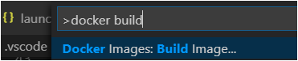
You can find the image name in the output of the Build Image command, the same can be found in the Images pane of the Docker Explorer.
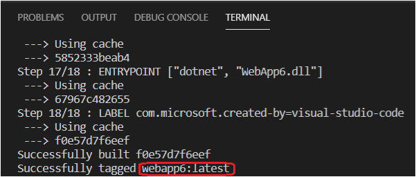
Push the image to a container registry
Before deploying the image to an App Service, the image must be uploaded to a container registry. The image can be uploaded to either Azure Container Registry (ACR) or Docker Hub.
Open the Docker Explorer and select Connect Registry... icon under Registries group and follow the prompt. Choose the provider (Azure or Docker Hub) and provide the credential to connect to the registry.
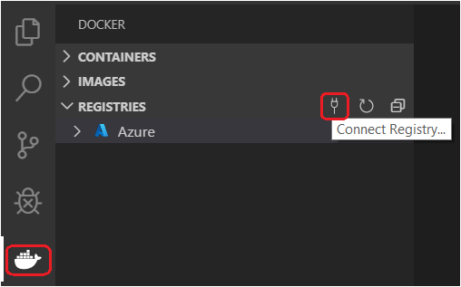
Now the registry will be visible under Registries.
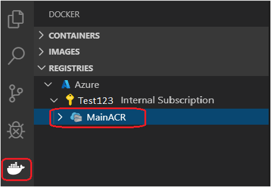
Optionally, tag the image. In order to upload an image to a registry, the image needs to be tagged with registry name so that the docker push will upload it to the right registry.
The image built in previous section will appear in the Docker Explorer under Images section. Right-click and choose Tag....
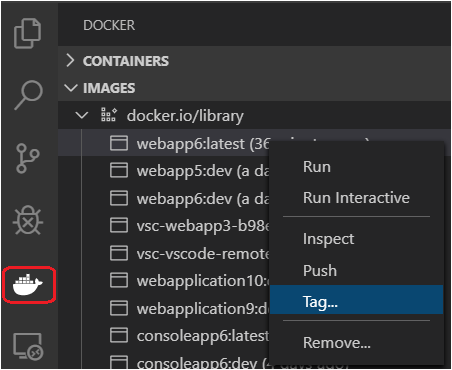
Specify the new name
<your registry or username>/<image name>:<tag>and complete the tag action. For example, new image name for ACR would be 'mainacr.azurecr.io/webapp6:latest' and for Docker Hub it would be 'myusername/webapp6:latest'.
The image will show up in the Docker Explorer under the registry that the image tag points to. Select this image and choose Push. If the image has not yet been tagged, you will be prompted to choose a registry to push to, and the image will be tagged based on the selection.
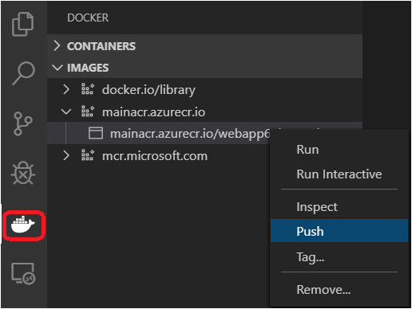
Once the push command is completed. Refresh the registry node where the image is pushed to and the uploaded image will show up.
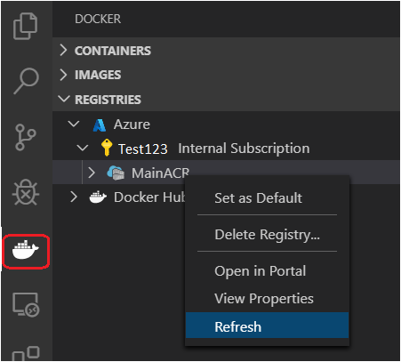
Deploy the image to Azure App Service
In the previous section, the image is pushed to a remote container registry. Now deploy this image to Azure App Service.
In Docker Explorer, navigate to your image under Registries, right-click on the tag, and select Deploy Image To Azure App Service....
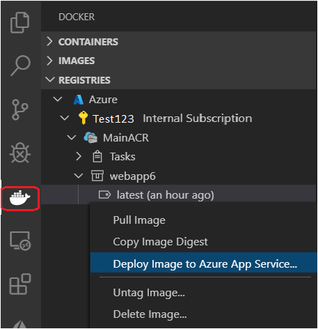
When prompted, provide the values for the App Service.
- New web app name: The name must be unique across Azure.
- Resource group: Select an existing resource group or create a new one.
- App Service plan: Select an existing App Service Plan or create a new one. (An App Service Plan defines the physical resources that host the website. You can use a basic or free plan tier for this tutorial.).
When deployment is complete, Visual Studio Code shows a notification with the website URL.
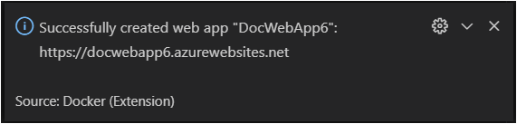
You can also see the results in the Output panel of Visual Studio Code, in the Docker section.
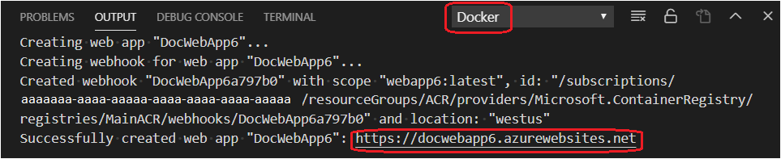
To browse the deployed website, you can use
kbstyle(Ctrl+click)to open the URL in the Output panel. The new App Service also appears in the Azure view in Visual Studio Code under the App Service section, where you can right-click the website and select Browse Website.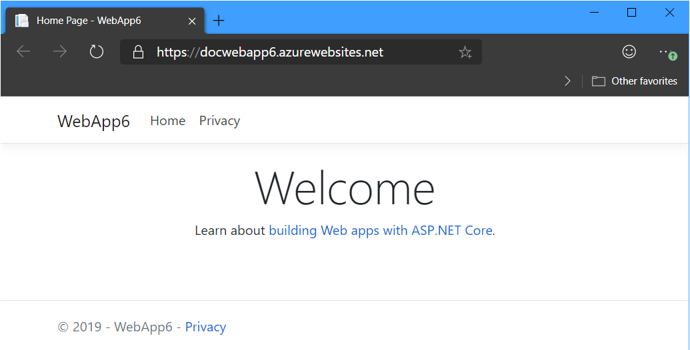
Deploy to ACI
In the previous section, the image was deployed to Azure App Service. Another option is to deploy the image to Azure Container Instances (ACI). First, deploy the container to a container registry, such as Docker Hub or ACR, as described earlier in this article. Then, find the container in the Registries section of the Docker Explorer. Use the Refresh button if you don't see it there. Right-click the entry for the image you want, and choose Deploy image to Azure Container Instances.
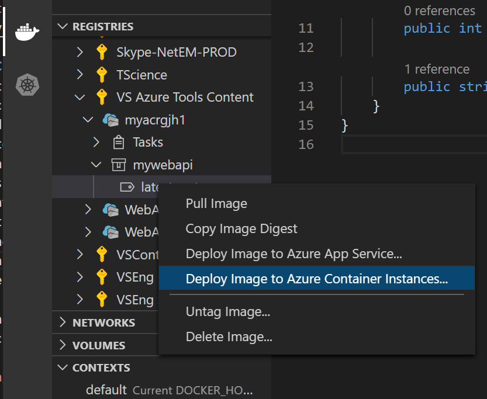
Choose an existing context, or use Create new ACI Context, and then choose the resource group. The container is started in ACI.
The context you created is displayed in the Contexts pane in the Docker Explorer and selected as the active context. Whichever context is the active one affects the images shown in the Containers pane.
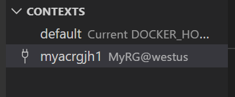
When the image finishes the start-up process and becomes available, an entry for the image appears in the Containers pane. You can then manage the container instance by right-clicking on the entry. For example, to monitor the logs, choose View Logs.
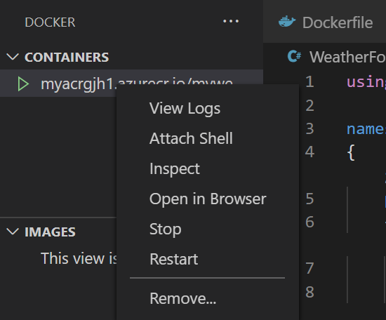
If it's a web app, you can use Open in Browser to navigate to the app's homepage. When you're done with the instance, right-click the instance name, and choose Remove. Because billing in ACI is by the second and only when the container is running, as soon as you remove it, you are no longer accruing charges.
Next steps
Read on to learn more about
- Azure Extensions - The VS Code Marketplace has hundreds of extensions for Azure and the cloud.
- Deploying to Azure - Learn step-by-step how to deploy your application to Azure.
- Working with MongoDB - Create, manage, and query MongoDB databases from within VS Code.